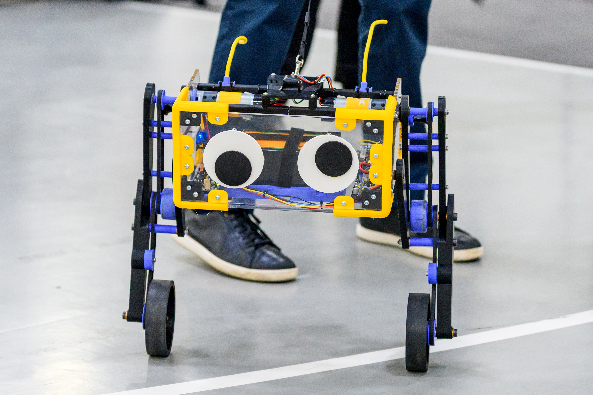
TODO
TODO
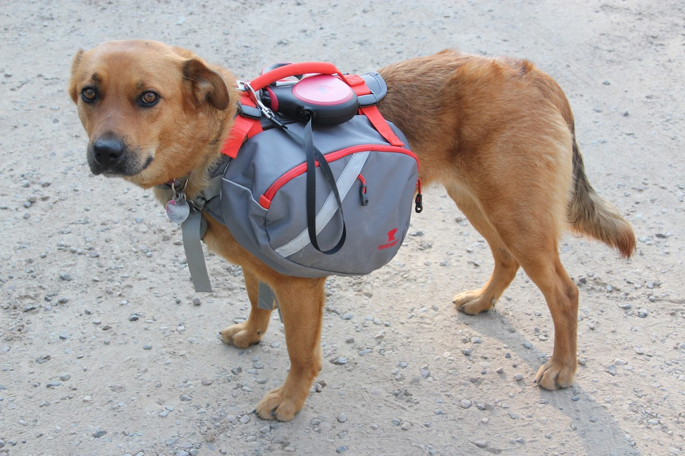
The dog walk scheduler helps my family create an optimal dog walking schedule each month using each person's preferences for every walk. It also creates ICS files so that each person can import their assigned walks into their calendar.
Learned
Languages/Frameworks/Tools: Docker, Perl, Python, Pyomo, Make
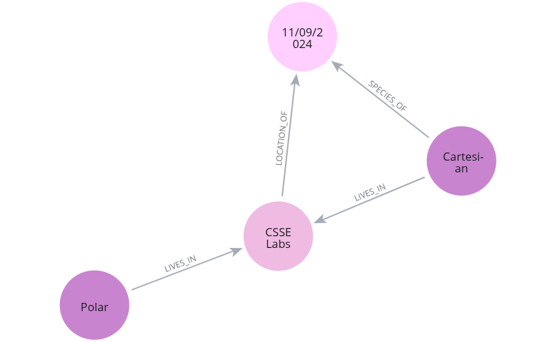
This was our final project for Advanced Database Systems. It recommends where to go to increase the chance of getting attacked by a bear. We used multiple NoSQL databases systems and an event queue for recovery.
Learned
Languages/Frameworks/Tools: MongoDB, Neo4j, InfluxDB, Kafka, Python, Replica Sets
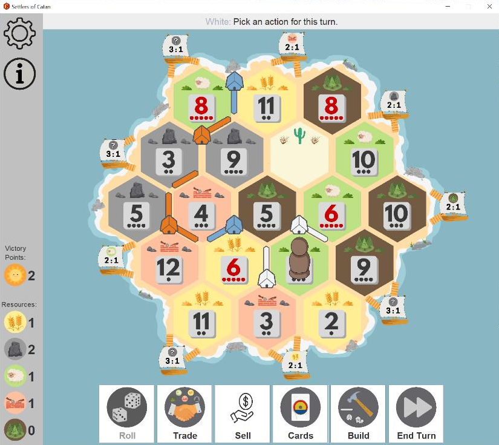
This was a project for Software Construction and Evolution. It adds new features and documentation to a project we developed for a previous course.
Learned
Languages/Frameworks/Tools: Java, JUnit, Gradle, IntelliJ
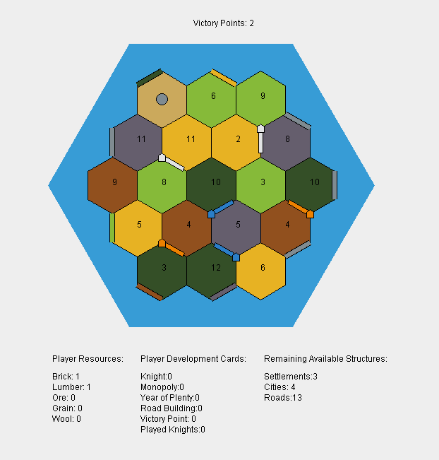
This was a quarter-long project for Software Quality Assurance. We used test-driven development to replicate the board game, Catan, in Java. Additionally, we integrated quality assurance tools using Gradle.
Learned
Languages/Frameworks/Tools: Java, JUnit, EasyMock, Gradle, SpotBugs, Checkstyle, JaCoCo, Pitest, IntelliJ
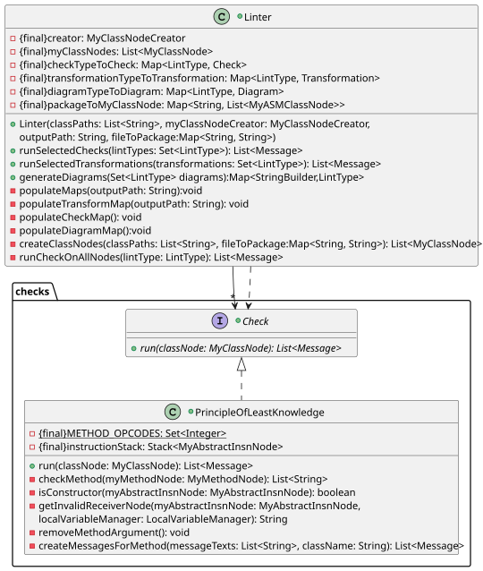
This was a final project for Software Design. We designed and wrote a Java linter in Java using the ASM bytecode library. We each wrote a style check, design pattern check, and design principle check with flexibility to add more checks of each type in the future.
Learned
Languages/Frameworks/Tools: Java, JUnit, PlantUML
During the winter quarter in 2022-2023, a few of us were in the same group for Introduction to Database Systems and Introduction to Web Programming. For our final projects, we decided to work on projects with similar features but very different implementations to avoid reducing project work.
Our plan was to combine the two projects once the quarter ended. However, we encountered many challenges because the implementations were so different and did not have enough time before the start of the spring quarter to combine them.
We designed a system for users to see the menu and review and rate items at the Bon, Rose-Hulman's cafeteria, through a website. Also, users must create an account and can take a survey to determine their taste profile.
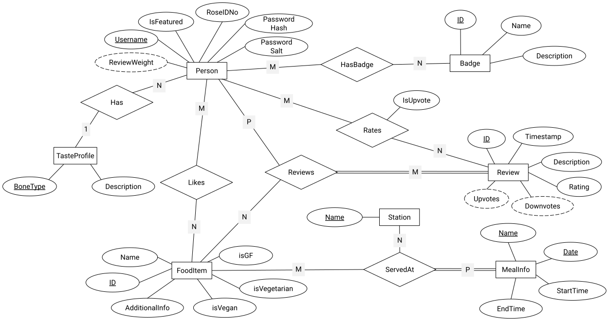
This was a final project for Introduction to Database Systems. We created the database with Microsoft SQL Server and developed a simple website that interacts with the database using Tedious. We also wrote a web scraper to retrieve the menu items for the day.
Learned
Languages/Frameworks/Tools: JavaScript, Microsoft SQL Server, Transact-SQL, SQL, Tedious, Node.js, Express, Java, Python, Scrapy
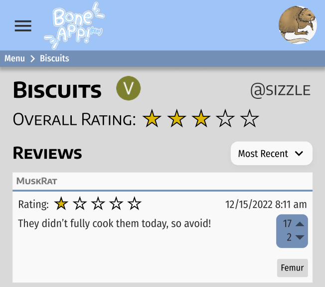
This was a final project for Introduction to Web Programming. We used Firebase to host the website, Firestore for the database, and wrote Firebase Cloud Functions to interact with the database.
Learned
Languages/Frameworks/Tools: JavaScript, HTML, CSS, Firebase, Figma, Material Design Bootstrap
This was a final project for Debugging: From Art to Science, where we debugged open source software. We found and fixed two defects in SageMath. The issues that describe the defects are linked below, but we did not finish the contribution process.
Learned
Languages/Frameworks/Tools: pdb, Python
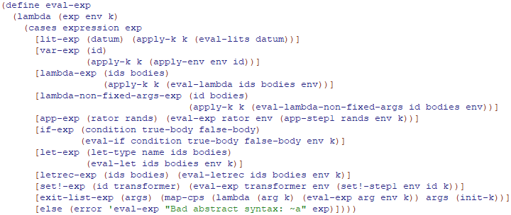
This was a project for Programming Language Concepts. We developed a Scheme interpreter in Racket that included, parsing, unparsing, and evaluating expressions, applying procedures, and call/cc.
Learned
Languages/Frameworks/Tools: Racket, Dr. Racket
This was a final project for Software Requirements Engineering. We interviewed stakeholders, developed needs, features, and requirements, created prototypes, prioritized features, and planned a release schedule, while maintaining constant communication with stakeholders.
Learned
Languages/Frameworks/Tools: Elicitation, Communication, Problem Modeling, Balsamiq, RICE Prioritization
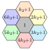
In this course, we developed mathematical models for three COMAP contest problems.
Learned
Languages/Frameworks/Tools: Lua, LaTeX, Python, Java
Choosing a Bicycle Wheel
Game of Ecology
Radio Channel Assignments
This was a final project for Software Program Understanding. We were curious about abstract interpretation and static analysis, like tracking data flow, which we learned about briefly in class. Our approach was to develop questions and hypotheses about about those topics and research them, generating more questions.
Learned
Languages/Frameworks/Tools: Research
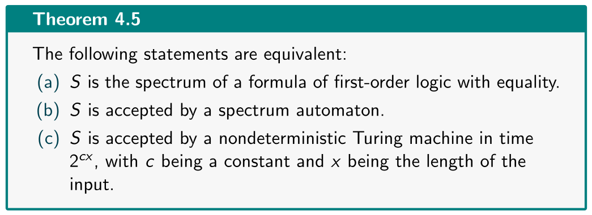
This was a final presentation for Mathematical Logic. During the course, we were particularly interested in spectra of first-order formulas, and we found a paper on spectra complexity, relating spectra to classes of Turing machines. It proved Theorem 4.5.
Learned
Languages/Frameworks/Tools: Research, Complexity, Logic
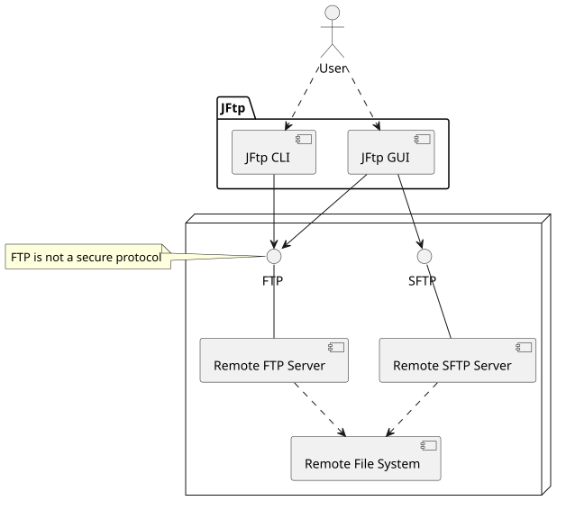
This was a quarter project for Software Architecture. JFtp is an application that connects to remote file servers and transfers files between them. We analyzed JFtp's software architecture and then made modifications to improve the architecture and add features.
Learned
Languages/Frameworks/Tools: Java, PlantUML, Go
This was my IB Computer Science HL Internal Assessment project and the first time I created a website and used a database. The robotics team I was on needed a better way to track the sponsors each student was contacting and the current steps in the sponsorship process. This website let team members track their next steps and view current and previous sponsors.
Learned
Languages/Frameworks/Tools: PHP, MySQL, HTML, CSS